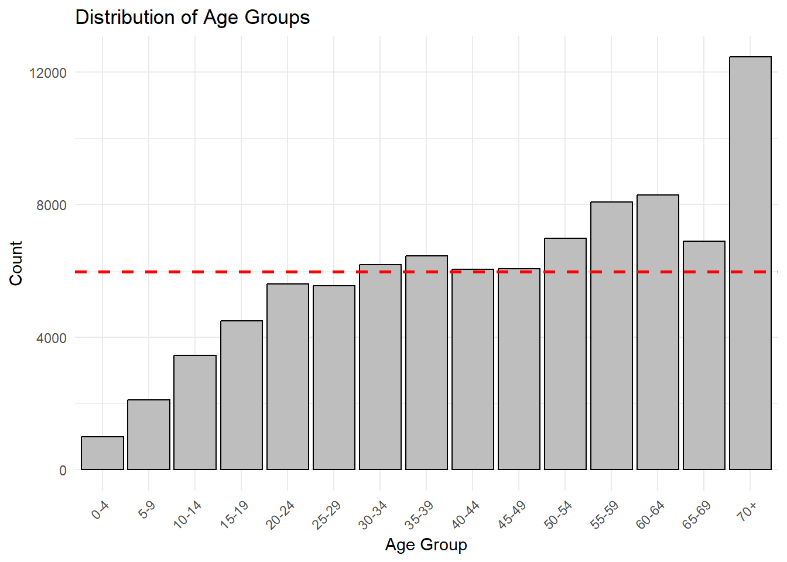
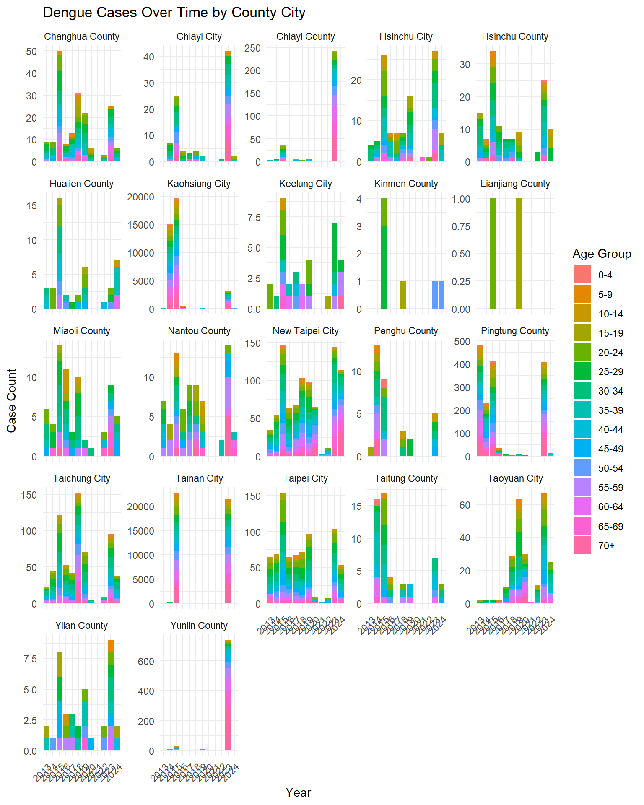
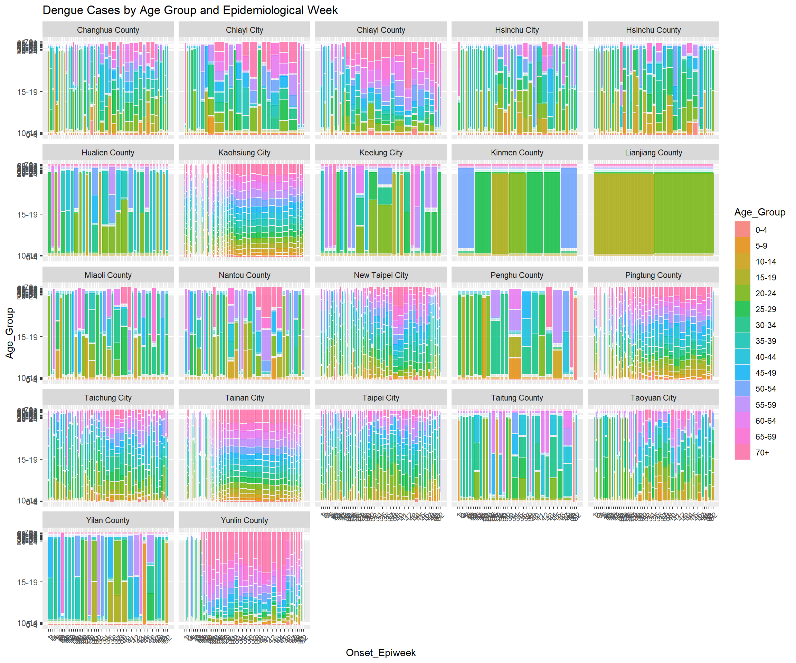
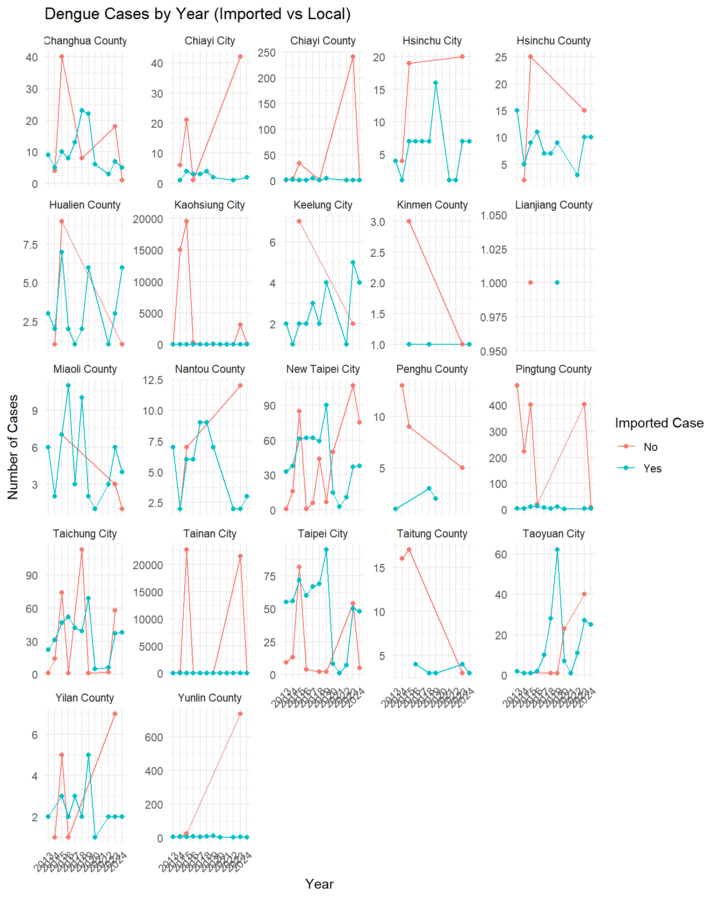
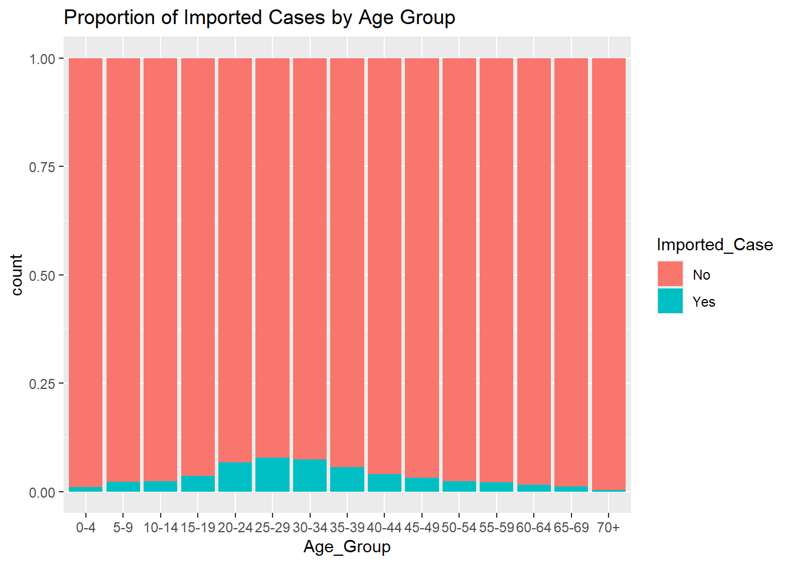
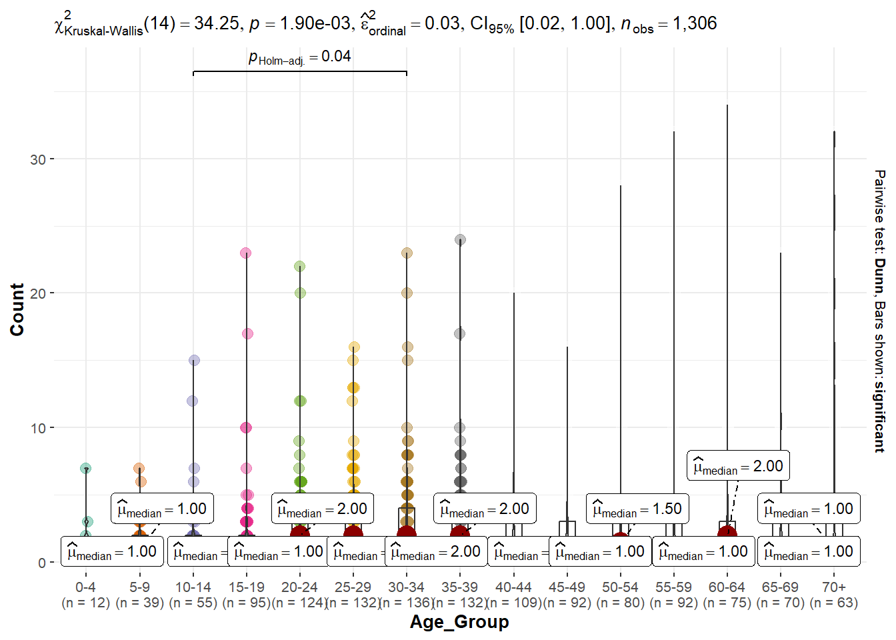

Loading R packages
pacman::p_load(tidyverse, plotly, sf, tmap, GGally, ggstatsplot, ggmosaic)Jia Peng Chua
March 20, 2025
March 28, 2025
The following R packages will be required:
tidyverse: Used for data manipulation, visualisation and analysis
plotly: For plotting interactive statistical graphs
sf: For analysing and visualising spatial data
tmap: Create static and interactive thematic maps
GGally: Provide additional visualisation functions
ggplot2: For customisable plots
The code chunk below uses read_csv() of readr to import the dengue_daily dataset into R environment.
發病日 個案研判日 通報日
Min. :1998-01-02 Min. :2004-05-16 Min. :1998-01-07
1st Qu.:2014-10-29 1st Qu.:2014-11-28 1st Qu.:2014-10-31
Median :2015-09-29 Median :2015-10-10 Median :2015-10-01
Mean :2016-04-13 Mean :2017-02-27 Mean :2016-04-16
3rd Qu.:2023-07-10 3rd Qu.:2023-08-18 3rd Qu.:2023-07-13
Max. :2025-03-16 Max. :2025-03-16 Max. :2025-03-16
NA's :6279
性別 年齡層 居住縣市 居住鄉鎮
Length:107312 Length:107312 Length:107312 Length:107312
Class :character Class :character Class :character Class :character
Mode :character Mode :character Mode :character Mode :character
居住村里 最小統計區 最小統計區中心點X 最小統計區中心點Y
Length:107312 Length:107312 Min. :118.3 Min. :21.93
Class :character Class :character 1st Qu.:120.2 1st Qu.:22.63
Mode :character Mode :character Median :120.3 Median :22.96
Mean :120.3 Mean :22.91
3rd Qu.:120.3 3rd Qu.:23.00
Max. :122.0 Max. :26.16
NA's :789 NA's :789
一級統計區 二級統計區 感染縣市 感染鄉鎮
Length:107312 Length:107312 Length:107312 Length:107312
Class :character Class :character Class :character Class :character
Mode :character Mode :character Mode :character Mode :character
感染村里 是否境外移入 感染國家 確定病例數
Length:107312 Length:107312 Length:107312 Min. :1
Class :character Class :character Class :character 1st Qu.:1
Mode :character Mode :character Mode :character Median :1
Mean :1
3rd Qu.:1
Max. :2
居住村里代碼 感染村里代碼 血清型 內政部居住縣市代碼
Length:107312 Length:107312 Length:107312 Min. : 63.0
Class :character Class :character Class :character 1st Qu.: 64.0
Mode :character Mode :character Mode :character Median : 67.0
Mean : 546.3
3rd Qu.: 67.0
Max. :10020.0
NA's :476
內政部居住鄉鎮代碼 內政部感染縣市代碼 內政部感染鄉鎮代碼
Min. : 900701 Min. : 63 Min. :1000202
1st Qu.:6400700 1st Qu.: 64 1st Qu.:6400700
Median :6401800 Median : 66 Median :6401600
Mean :6281126 Mean : 359 Mean :6384118
3rd Qu.:6703300 3rd Qu.: 67 3rd Qu.:6703300
Max. :6801200 Max. :10020 Max. :6801000
NA's :476 NA's :19108 NA's :19108 Translating the column names into English will make the dataset more user-friendly:
發病日: Onset Date
個案研判日: Case Classification Date
通報日: Reporting Date
性別: Gender
年齡層: Age Group
居住縣市: Residential County/City
居住鄉鎮: Residential Town/District
居住村里: Residential Village
最小統計區: Smallest Statistical Area
最小統計區中心點X: X-coord
最小統計區中心點Y: Y-coord
一級統計區: Primary Statistical Area
二級統計區: Secondary Statistical Area
感染縣市: Infection County/City
感染鄉鎮: Infection Town/District
感染村里: Infection Village
是否境外移入: Imported Case
感染國家: Infection Country
確定病例數: Confirmed Cases
居住村里代碼: Residential Village Code
感染村里代碼: Infection Village Code
血清型: Serotype
內政部居住縣市代碼: MOI Residential County Code
內政部居住鄉鎮代碼: MOI Residential Town Code
內政部感染縣市代碼: MOI Infection County Code
內政部感染鄉鎮代碼: MOI Infection Town Code
colnames(dengue_daily) <- c("Onset_Date", "Case_Classification_Date", "Reporting_Date", "Gender",
"Age_Group", "Residential_County_City", "Residential_Town_District",
"Residential_Village", "Smallest_Statistical_Area", "X_coord",
"Y_coord", "Primary_Statistical_Area", "Secondary_Statistical_Area",
"Infection_County_City", "Infection_Town_District", "Infection_Village",
"Imported_Case", "Infection_Country", "Confirmed_Cases",
"Residential_Village_Code", "Infection_Village_Code", "Serotype",
"MOI_Residential_County_Code", "MOI_Residential_Town_Code",
"MOI_Infection_County_Code", "MOI_Infection_Town_Code")Checking the column titles:
[1] "Onset_Date" "Case_Classification_Date"
[3] "Reporting_Date" "Gender"
[5] "Age_Group" "Residential_County_City"
[7] "Residential_Town_District" "Residential_Village"
[9] "Smallest_Statistical_Area" "X_coord"
[11] "Y_coord" "Primary_Statistical_Area"
[13] "Secondary_Statistical_Area" "Infection_County_City"
[15] "Infection_Town_District" "Infection_Village"
[17] "Imported_Case" "Infection_Country"
[19] "Confirmed_Cases" "Residential_Village_Code"
[21] "Infection_Village_Code" "Serotype"
[23] "MOI_Residential_County_Code" "MOI_Residential_Town_Code"
[25] "MOI_Infection_County_Code" "MOI_Infection_Town_Code" Translating the Imported_Case and Residential_County_City column values for better usability.
屏東縣: Pingtung County
宜蘭縣: Yilan County
高雄市: Kaohsiung City
桃園市: Taoyuan City
新北市: New Taipei City
台北市: Taipei City
台南市: Tainan City
新竹縣: Hsinchu County
南投縣: Nantou County
台中市: Taichung City
新竹市: Hsinchu City
雲林縣: Yunlin County
彰化縣: Changhua County
花蓮縣: Hualien County
台東縣: Taitung County
嘉義縣: Chiayi County
嘉義市: Chiayi City
基隆市: Keelung City
苗栗縣: Miaoli County
澎湖縣: Penghu County
連江縣: Lianjiang County
金門縣: Kinmen County
dengue_daily <- dengue_daily %>%
mutate(Residential_County_City_t = recode(Residential_County_City,
"屏東縣" = "Pingtung County",
"宜蘭縣" = "Yilan County",
"高雄市" = "Kaohsiung City",
"桃園市" = "Taoyuan City",
"新北市" = "New Taipei City",
"台北市" = "Taipei City",
"台南市" = "Tainan City",
"新竹縣" = "Hsinchu County",
"南投縣" = "Nantou County",
"台中市" = "Taichung City",
"新竹市" = "Hsinchu City",
"雲林縣" = "Yunlin County",
"彰化縣" = "Changhua County",
"花蓮縣" = "Hualien County",
"台東縣" = "Taitung County",
"嘉義縣" = "Chiayi County",
"嘉義市" = "Chiayi City",
"基隆市" = "Keelung City",
"苗栗縣" = "Miaoli County",
"澎湖縣" = "Penghu County",
"連江縣" = "Lianjiang County",
"金門縣" = "Kinmen County"))We’ll select columns required for our analysis.
Loading and viewing the Taiwan map.
Reading layer `VILLAGE_MOI_1090324' from data source
`C:\jpchua\ISSS608-jpc\Take-home_Ex\Take-home_Ex03\data\TAIWAN_VILLAGE_2020'
using driver `ESRI Shapefile'
Simple feature collection with 7965 features and 10 fields
Geometry type: MULTIPOLYGON
Dimension: XY
Bounding box: xmin: 114.3593 ymin: 10.37135 xmax: 124.5611 ymax: 26.38528
Geodetic CRS: TWD97First, we view the Age_Group column.
# A tibble: 19 × 2
Age_Group n
<chr> <int>
1 0 78
2 1 173
3 10-14 4087
4 15-19 5306
5 2 248
6 20-24 6665
7 25-29 6861
8 3 318
9 30-34 7506
10 35-39 7756
11 4 305
12 40-44 7530
13 45-49 7693
14 5-9 2523
15 50-54 8784
16 55-59 9793
17 60-64 9793
18 65-69 8009
19 70+ 13884The Age_Group values are inconsistent as there are individual values with relatively low counts. Let’s combine ages 0,1,2,3,4, to a single age group, “0-4”, and sort the columns for better readability.
Next, let observe the dengue cases by age groups over the years.
dengue_daily <- dengue_daily %>%
mutate(Onset_Date = ymd(Onset_Date))
# Extract the year from the Date column
dengue_daily <- dengue_daily %>%
mutate(Onset_Year =as.integer(year(Onset_Date)))
dengue_daily_aggregated <- dengue_daily %>%
group_by(Age_Group, Residential_County_City_t, Onset_Year) %>%
summarize(Count = n(), .groups = "drop")
cases_by_age <- dengue_daily_aggregated %>%
plot_ly(x = ~Age_Group,
y = ~Count,
color = ~Residential_County_City_t,
text = ~Residential_County_City_t,
hoverinfo = "text",
type = 'scatter',
mode = 'markers',
frame = ~Onset_Year) %>%
layout(
title = "Dengue Cases by Age Group",
xaxis = list(title = "Age Group"),
yaxis = list(title = "Count of Cases"),
showlegend = FALSE
)
cases_by_ageWe observed several spikes in the last 12 years from 2013 to 2024, so we will filter the dataset to focus our analysis on relevant trends.
Onset_Date Gender Age_Group
Min. :2013-01-01 Length:90099 70+ :12478
1st Qu.:2015-09-02 Class :character 60-64 : 8318
Median :2015-10-25 Mode :character 55-59 : 8101
Mean :2018-01-23 50-54 : 7007
3rd Qu.:2023-09-03 65-69 : 6908
Max. :2024-12-30 35-39 : 6492
(Other):40795
Residential_County_City_t Residential_Town_District X_coord
Length:90099 Length:90099 Min. :118.3
Class :character Class :character 1st Qu.:120.2
Mode :character Mode :character Median :120.3
Mean :120.3
3rd Qu.:120.3
Max. :122.0
NA's :456
Y_coord Imported_Case Confirmed_Cases MOI_Residential_County_Code
Min. :21.93 Length:90099 Min. :1 Min. : 63.0
1st Qu.:22.64 Class :character 1st Qu.:1 1st Qu.: 64.0
Median :22.97 Mode :character Median :1 Median : 67.0
Mean :22.91 Mean :1 Mean : 464.2
3rd Qu.:23.01 3rd Qu.:1 3rd Qu.: 67.0
Max. :26.16 Max. :2 Max. :10020.0
NA's :456
MOI_Residential_Town_Code Onset_Year
Min. : 900701 Min. :2013
1st Qu.:6400800 1st Qu.:2015
Median :6700100 Median :2015
Mean :6338265 Mean :2017
3rd Qu.:6703300 3rd Qu.:2023
Max. :6801200 Max. :2024
We’ll only keep the rows where there’s X-coordinate and Y-coordinate value.
epiweek() is the US CDC version of epidemiological week. It follows same rules as isoweek() but starts on Sunday. We create a new variable Onset_Epiweek to log the epidemiological weeks.
Let’s check the Coordinate Reference System (CRS) for the Taiwan map dataset. CRS defines the location on Earth’s surface, which helps when we are transforming the spatial dataset. The CRS for Taiwan is 3824.
Coordinate Reference System:
User input: TWD97
wkt:
GEOGCRS["TWD97",
DATUM["Taiwan Datum 1997",
ELLIPSOID["GRS 1980",6378137,298.257222101,
LENGTHUNIT["metre",1]]],
PRIMEM["Greenwich",0,
ANGLEUNIT["degree",0.0174532925199433]],
CS[ellipsoidal,2],
AXIS["geodetic latitude (Lat)",north,
ORDER[1],
ANGLEUNIT["degree",0.0174532925199433]],
AXIS["geodetic longitude (Lon)",east,
ORDER[2],
ANGLEUNIT["degree",0.0174532925199433]],
USAGE[
SCOPE["Horizontal component of 3D system."],
AREA["Taiwan, Republic of China - onshore and offshore - Taiwan Island, Penghu (Pescadores) Islands."],
BBOX[17.36,114.32,26.96,123.61]],
ID["EPSG",3824]]Coordinate Reference System:
User input: EPSG:3824
wkt:
GEOGCRS["TWD97",
DATUM["Taiwan Datum 1997",
ELLIPSOID["GRS 1980",6378137,298.257222101,
LENGTHUNIT["metre",1]]],
PRIMEM["Greenwich",0,
ANGLEUNIT["degree",0.0174532925199433]],
CS[ellipsoidal,2],
AXIS["geodetic latitude (Lat)",north,
ORDER[1],
ANGLEUNIT["degree",0.0174532925199433]],
AXIS["geodetic longitude (Lon)",east,
ORDER[2],
ANGLEUNIT["degree",0.0174532925199433]],
USAGE[
SCOPE["Horizontal component of 3D system."],
AREA["Taiwan, Republic of China - onshore and offshore - Taiwan Island, Penghu (Pescadores) Islands."],
BBOX[17.36,114.32,26.96,123.61]],
ID["EPSG",3824]]To join both datasets, we need to first identify the common IDs that we can join between the 2 tables. In the dengue_12yrs table, we noticed that the county codes have inconsistent number of characters.
County Codes from dengue_12yrs: [1] 64 67 63 66 10004 10008 65 10016 10010 10005 10009 10018
[13] 10007 10013 10015 10017 10002 68 10020 10014 9020 9007
============================County Codes from tw_map: [1] "10013" "64000" "09007" "10015" "10018" "10014" "66000" "10010" "68000"
[10] "10008" "10009" "10004" "10020" "67000" "10017" "10016" "09020" "10005"
[19] "10002" "10007" "65000" "63000"For the codes with missing “0”s behind them, we’ll pad them with “0”s.
[1] "64000" "67000" "63000" "66000" "10004" "10008" "65000" "10016" "10010"
[10] "10005" "10009" "10018" "10007" "10013" "10015" "10017" "10002" "68000"
[19] "10020" "10014" "90200" "90070"ggplot(data = dengue_12yrs, aes(x = Age_Group)) +
geom_bar(color = "black", fill = "grey") +
ggtitle("Distribution of Age Groups") +
xlab("Age Group") +
ylab("Count") +
theme_minimal() +
theme(axis.text.x = element_text(angle = 45, hjust = 1)) +
geom_hline(yintercept = mean(table(dengue_12yrs$Age_Group)),
linetype = "dashed", color = "red", size = 1)
We observe that the number of cases is relatively lower among individuals aged 0 to 19. In contrast, cases are above average for those aged 50 and above, with a noticeable spike among residents over 70 years old.
Let’s visualise the number of dengue cases over time by county city.
dengue_aggregated <- dengue_12yrs %>%
group_by(Age_Group, Residential_County_City_t, Onset_Year) %>%
summarize(Count = n(), .groups = "drop")
dengue_aggregated$Onset_Year <- as.factor(dengue_aggregated$Onset_Year)
ggplot(dengue_aggregated, aes(x = Onset_Year, y = Count, fill = Age_Group)) +
geom_bar(stat = "identity") +
facet_wrap(~ Residential_County_City_t, scales = "free_y") +
theme_minimal() +
labs(
title = "Dengue Cases Over Time by County City",
x = "Year",
y = "Case Count",
fill = "Age Group"
) +
theme(axis.text.x = element_text(angle = 45, hjust = 1))
We noticed significant number of cases in Kaohsiung City and Tainan City, with significant spikes in cases in 2014, 2015 and 2023.
Let’s visualise the dengue cases by epidemiological week.
cases_by_epiweek <- dengue_12yrs %>%
group_by(Onset_Epiweek, Onset_Year) %>%
summarise(Count = n(), .groups = "drop")
mean_cases <- mean(cases_by_epiweek$Count, na.rm = TRUE)
ggplotly(ggplot(cases_by_epiweek,
aes(x = Onset_Epiweek, y = Count,
color = Onset_Year, group = Onset_Year)) +
geom_line(size = 0.5) +
geom_hline(yintercept = mean_cases,
linetype = "dashed", color = "red", size = 0.2)+
annotate("text", x = 10, y = mean_cases + 60,
label = paste("Mean:", round(mean_cases,1)),
color = "black") +
labs(
title = "Dengue Cases by Epidemiological Week Over the Years",
x = "Epidemiological Week",
y = "Number of Cases",
color = "Year"
)
)We observed an increase in cases starting around epidemiological week 32, with a decline from week 51 onwards. This trend was particularly noticeable in the years 2014, 2015, and 2023.
The spike in 2023 aligns with the post-COVID-19 period when international travel resumed, leading to an influx of tourists visiting Taiwan, which may have contributed to the rise in cases.

Let’s visualise the trend for imported vs local cases.
cases_by_imported_cases <- dengue_12yrs %>%
group_by(Onset_Epiweek, Imported_Case) %>%
summarize(Count = n(), .groups = "drop")
ggplotly(ggplot(cases_by_imported_cases,
aes(x = Onset_Epiweek, y = Count, color = Imported_Case,
group = Imported_Case)) +
geom_line() +
geom_point() +
labs(title = "Dengue Cases by Epidemiological Week (Imported vs Local)",
x = "Epidemiological Week", y = "Number of Cases",
color = "Imported Case")
)We noticed that the local cases are significantly higher than imported cases from epidemiological week 25 to 51 and epidemiological week 1 to 3.
cases_by_year_facets <- dengue_12yrs %>%
group_by(Onset_Year, Imported_Case, Residential_County_City_t) %>%
summarize(Count = n(), .groups = "drop")
cases_by_year_facets$Onset_Year <- as.factor(cases_by_year_facets$Onset_Year)
ggplot(cases_by_year_facets, aes(x = Onset_Year, y = Count, color = Imported_Case, group = Imported_Case)) +
geom_line() +
geom_point() +
labs(title = "Dengue Cases by Year (Imported vs Local)",
x = "Year",
y = "Number of Cases",
color = "Imported Case") +
facet_wrap(~ Residential_County_City_t, scales = "free_y") +
theme_minimal() +
theme(axis.text.x = element_text(angle = 45, hjust = 1))
Since our variables are mostly categorical, we can perform chi-squared test and significant test of association to determine if there is a statistically significant relationship between the categorical variables.
Pearson's Chi-squared test
data: table_gender_age_group
X-squared = 648.27, df = 14, p-value < 2.2e-16
Pearson's Chi-squared test with Yates' continuity correction
data: table_gender_imported_case
X-squared = 44.484, df = 1, p-value = 2.565e-11
Pearson's Chi-squared test
data: table_age_group_county
X-squared = 2455, df = 294, p-value < 2.2e-16
Pearson's Chi-squared test
data: table_age_group_imported_case
X-squared = 1589.4, df = 14, p-value < 2.2e-16
Pearson's Chi-squared test
data: table_gender_county
X-squared = 205.29, df = 21, p-value < 2.2e-16grouped_data <- dengue_12yrs %>%
group_by(Gender, Age_Group, Residential_County_City_t) %>%
summarize(Count = n(), .groups = "drop")
#dengue_12yrs <- dengue_12yrs %>%
# mutate(Imported_Case_t = recode(Imported_Case, "Yes" = 1, "No" = 0))
model <- lm(Count ~ Gender + Age_Group +
Residential_County_City_t ,
data = grouped_data)
model
Call:
lm(formula = Count ~ Gender + Age_Group + Residential_County_City_t,
data = grouped_data)
Coefficients:
(Intercept)
-287.903
GenderM
7.606
Age_Group5-9
142.302
Age_Group10-14
218.055
Age_Group15-19
252.534
Age_Group20-24
283.080
Age_Group25-29
282.518
Age_Group30-34
297.851
Age_Group35-39
305.045
Age_Group40-44
293.211
Age_Group45-49
293.353
Age_Group50-54
318.550
Age_Group55-59
346.558
Age_Group60-64
361.662
Age_Group65-69
321.656
Age_Group70+
495.974
Residential_County_City_tChiayi City
-23.179
Residential_County_City_tChiayi County
1.772
Residential_County_City_tHsinchu City
-13.202
Residential_County_City_tHsinchu County
6.848
Residential_County_City_tHualien County
-10.593
Residential_County_City_tKaohsiung City
1295.843
Residential_County_City_tKeelung City
-28.650
Residential_County_City_tKinmen County
-7.828
Residential_County_City_tLianjiang County
17.293
Residential_County_City_tMiaoli County
-30.874
Residential_County_City_tNantou County
-17.990
Residential_County_City_tNew Taipei City
24.531
Residential_County_City_tPenghu County
-3.079
Residential_County_City_tPingtung County
56.777
Residential_County_City_tTaichung City
25.010
Residential_County_City_tTainan City
1494.143
Residential_County_City_tTaipei City
19.634
Residential_County_City_tTaitung County
4.681
Residential_County_City_tTaoyuan City
-8.068
Residential_County_City_tYilan County
-1.465
Residential_County_City_tYunlin County
21.793
# Check for Multicollinearity
Low Correlation
Term VIF VIF 95% CI Increased SE Tolerance
Gender 1.01 [1.00, 17.22] 1.01 0.99
Age_Group 1.15 [1.08, 1.30] 1.07 0.87
Residential_County_City_t 1.16 [1.08, 1.31] 1.08 0.86
Tolerance 95% CI
[0.06, 1.00]
[0.77, 0.93]
[0.77, 0.93]ggplot(dengue_12yrs, aes(x = Age_Group, fill = Imported_Case)) +
geom_bar(position = "fill") +
labs(title = "Proportion of Imported Cases by Age Group")
filtered_dengue_12yrs <- dengue_12yrs %>%
filter(!Onset_Year %in% c(2014, 2015, 2023))
cases_by_gender <- filtered_dengue_12yrs %>%
group_by(Onset_Year, Gender, Age_Group, Residential_County_City_t) %>%
summarize(Count = n(), .groups = "drop")
ggbetweenstats(
data = cases_by_gender,
x = Age_Group,
y = Count,
type = "np",
messages = FALSE
)